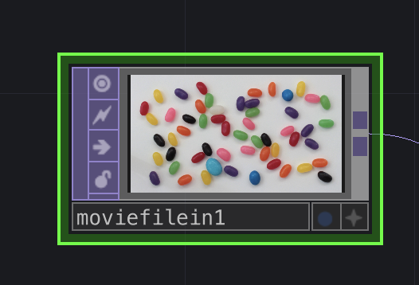
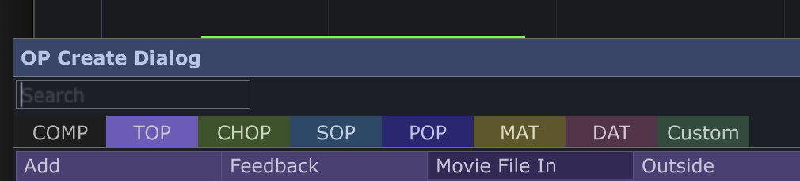
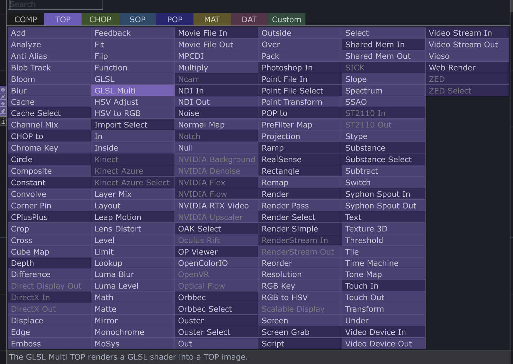
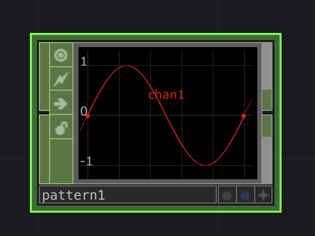
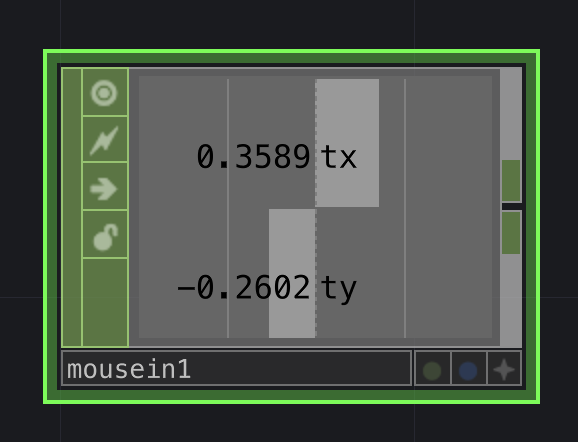
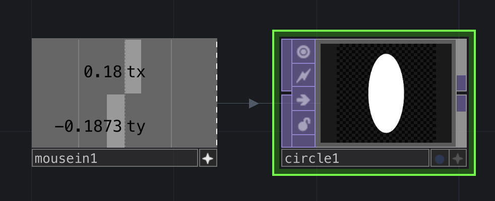

Texture Operator. 이미지·영상을 픽셀 단위로 다루고, 효과를 비파괴적으로 쌓는다.
Channel Operator. 마우스·키보드·소리 같은 입력 데이터를 신호로 받아 화면을 움직인다.
TEXTURE OPERATOR · CHANNEL OPERATOR
터치디자이너의 모든 도구는 오퍼레이터다. 하나하나가 기능을 담은 노드.

화면 속 노드 하나가 오퍼레이터 하나.
GPU에서 모든 2D 이미지 연산을 처리한다. 영상·이미지·실시간 합성이 전부 여기서 일어난다.
같은 색(같은 나라)끼리만 직접 연결된다 · 색이 다르면 변환 오퍼레이터를 거친다

색색의 탭이 각각의 패밀리.
Texture Operator. 이미지·영상을 픽셀로 다룬다.

이미지·영상 처리 오퍼레이터.
오퍼레이터를 연결해도 이전 노드는 사라지지 않는다. 언제든 끄고 켜고 순서를 바꾼다 — 비파괴 편집.
웹캠 영상을 받아온다
프레임을 시간순으로 쌓는다
시간을 왜곡한다
흑백 디스플레이스먼트 맵으로 픽셀마다 다른 시점을 고른다. 흰 픽셀은 가장 최근 프레임, 검은 픽셀은 가장 오래된 프레임 — 한 화면 안에서 시간이 어긋난다.
입력 데이터가 무엇이냐에 따라 효과는 천차만별 · 실시간 기기 데이터를 안정적으로 받아내는 것이 TD의 매력.
Channel Operator. 데이터를 신호로 다룬다.

숫자들의 흐름을 다룬다.
숫자도, 막대도, 파형도 전부 같은 신호다 — CHOP은 이 신호를 자유롭게 변형한다.

연결된 기기의 데이터를 가져온다.
op('mouse1')['tx']op('mouse1')['ty']
CHOP의 값을 다른 색 오퍼레이터의 파라미터로 보낸다. 선으로 잇던 규칙을 참조로 건너뛴다 — 첫 시간에 본 인터랙티브가 이렇게 만들어진다.
도구 하나하나가 오퍼레이터. 색은 패밀리이고, 같은 색끼리 직접 연결된다.
이미지·영상을 비파괴적으로 쌓는다. Edge · Mirror · Blur · Time Machine.
입력을 신호로. 숫자·채널·시각화, In과 Reference로 인터랙티브를 만든다.
직접 만든 재료를 공간에 증강한다.